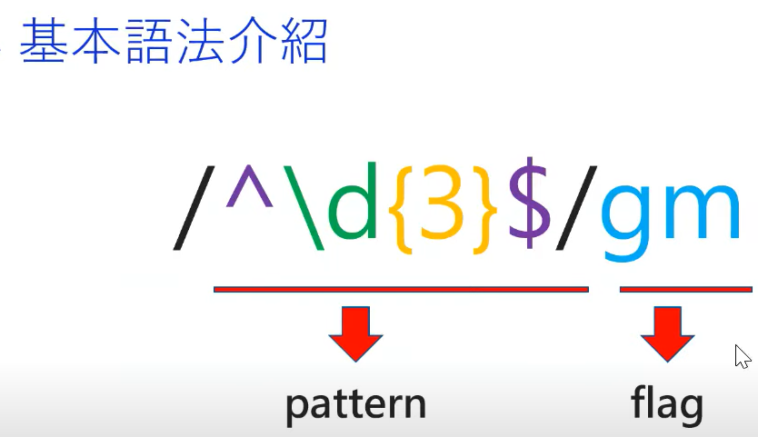
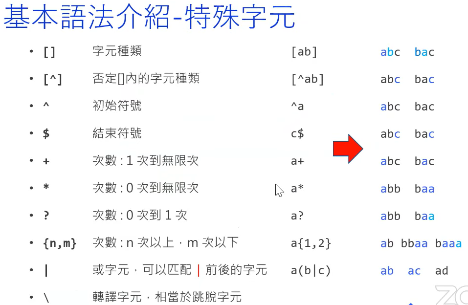

- [] - 字元種類, 匹配內部字元
- [^] - 否定[]內的字元種類, 內部字元以外都匹配
- ^ - 初始符號, 開頭要 ^a 後方字元才匹配
- $ - 結束符號, a$ 尾部是 a 的字元才匹配
- + - 次數 : 1次 ~ 無限次, a+ 一次以上會盡可能匹配到結束為止
- * - 次數 : 0次 ~ 無限次, ab* a
- ? - 次數 : 0次 ~ 1次, ab? a一定要有,b可有可沒有 (只能有一個b)
- {n,m} - 次數 : n次以上 ~ m次以下, ab{2,} 後方無填寫 2次~無限次
- | 或字元, 可匹配 | 前後的字元
- \ 轉譯字元, 相當於跳字元
